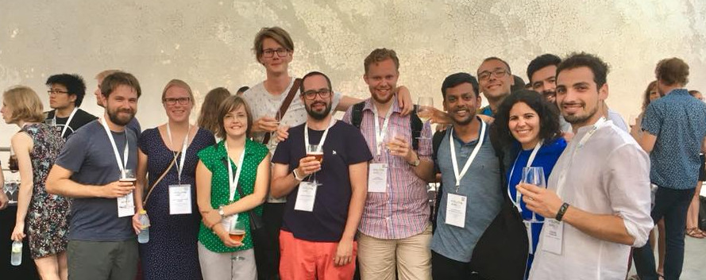
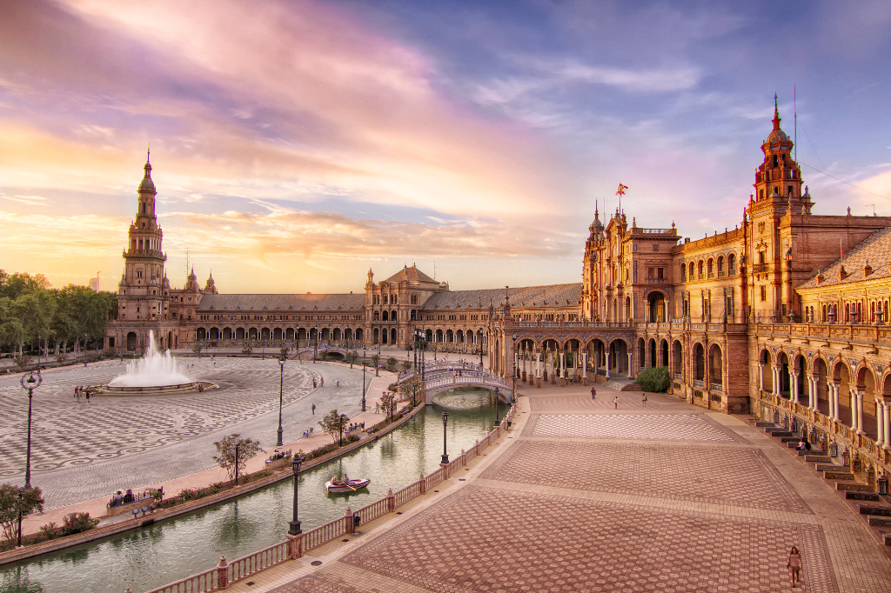
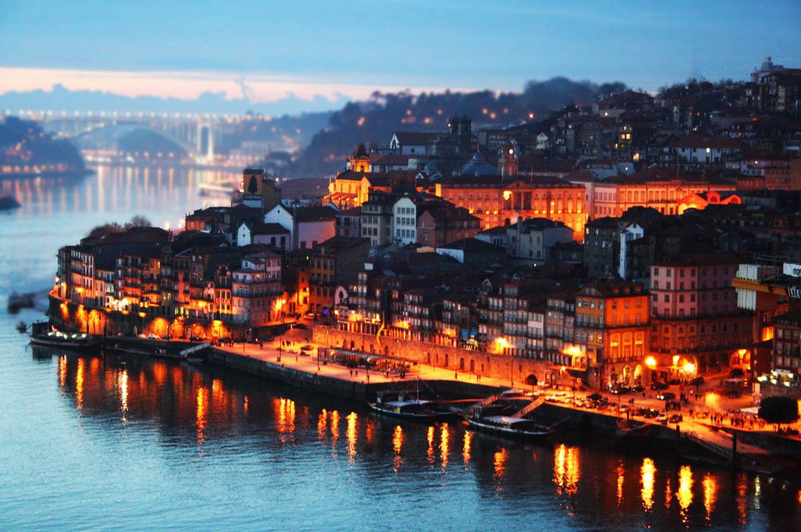
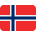

Enrolment is now open for the
2nd EUROYoung Workshop in Porto, Portugal during June,
25-26, 2020.
Visit the website now!
Dear all, due to the ongoing COVID-19 pandemic, we are forced to suspend the preparation of the workshop. We might resume it if the situation gets better, and we will try to adhere to the original schedule.
However, it's impossible to predict, as of now, whether the workshop will take place.
Please check
the website and your email for future updates.
Introduction
EUROYoung was born in 2018 to bring together young researchers in operational research, belonging to the member societies of EURO.
For the moment, EUROYoung is not a EURO working group.
The EURO Executive Committe has expressed its support to the group for the organisation of five European Young Researchers events (2019 to 2023), after which a more permanent decision will be made.
The objectives of EUROYoung include:
- Fostering collaboration among students and early-career researchers in O.R.;
- Providing young O.R. scholars and practitioners with tools to advance their careers, mainly through training;
- Creating networks both among young researchers and with more senior leaders in the field of O.R.;
- Connecting demand and offer in the O.R. job market, both in academia and the industry.

In the short- and medium-term, the main focus is the organisation of events targeted at students and young researchers, including seminars, workshops, schools, tutorial sessions, and webinars.
Our objectives when organising these events are:
- To create a bond between researchers going through a delicate phase of their career and preparing themselves to be the faculty and practitioners of tomorrow.
- To promote peer-education and give young researchers the opportunity to teach their colleagues something unique they have learnt.
- To facilitate sharing knowledge from established excellent O.R. “seniors” to the new generations.
- To provide very affordable (approaching zero-cost) opportunities to young researchers to present their work, learn, and network.
- To promote EURO, its activities, instruments, and resources.
Structure
EUROYoung is born with a very informal structure.
We are now bootstrapping the organisation and we are doing so along three directions:
- By recruiting new members: individual young researchers enrolled in their respective national societies.
- By reaching out to national youth chapters, in those country where they exist.
- By promoting the creation of youth chapters in countries where they don't yet exist.
Membership requirements
If you like to engage with your peers from many different countries, believe that together we can create amazing new opportunities for young O.R. researchers, and value friendship as much as professionalism, do not hesitate to sign up to our Google Group!
To keep EUROYoung true to its name, we would like our members to:
- Be members of any EURO national society.
- Be undergraduate, graduate, doctoral students, young faculty or practioners in the field of O.R. or, anyways, have a strong interest in operational research, decision science, machine learning, or data science.
- Be at most 35 years old or, otherwise, having completed your PhD not more than 5 years ago.
Activities
Our first activity was the organisation of the First EUROYoung workshop, which took place in Sevilla, Spain on 2-3 May 2019.
The webpage of the first Workshop is still available, and
you can also download the programme and the book of abstracts.

The second workshop will take place in Porto, Portugal on 25-26 June 2020.

More events will be organised in 2021 and the next years.
To know more and stay tuned enroll in our Google Group.
Members and Past Participants
| Name |
Country |
Affiliation |
| Adrián Esteban |
 |
University of Malaga |
| Alba Olivares |
|
Pablo de Olavide University |
| Alberto Santini |
|
Pompeu Fabra University |
| Amin Ahmadi Digehsara |
 |
Sabanci University |
| Andrea Mor |
 |
University of Brescia |
| Anika Pomes |
|
Karlsruhe Institute of Technology |
| Beizhen Jia |
|
Aalborg University |
| Brais Gonzalez |
|
University of Santiago de Compostela |
| Carolina Castañeda |
|
Pompeu Fabra University |
| Christian Schroeder |
|
RWTH University |
| Derya Dinler |
|
Middle East Technical University |
| Dmitrii Tikhonenko |
|
Pompeu Fabra University |
| Elín Björk Böðvarsdóttir |
|
Danish Technical University |
| Frederik Schulte |
|
TU Delft |
| Gabrijela Obradović |
|
Chalmers University of Technology |
| Hannah Bakker |
|
Karlsruhe Institute of Technology |
| João Fonseca |
|
Danish Technical University |
| Kamyar Kargar |
|
Bilkent University |
| Katyanne Farias de Araujo |
 |
Grenoble INP |
| Lavinia Amorosi |
|
University of Rome La Sapienza |
| Maria João |
|
University of Porto and INESC |
| Maria Mercedes Pelegrin |
|
University of Murcia |
| Marina Leal |
|
University of Sevilla |
| Marko Horvath |
|
Hungarian Academy of Science |
| Markus Gabl |
|
University of Vienna |
| Marta Baldomero |
|
University of Cadiz |
| Martina Fischetti |
|
Vattenfal |
| Mathieu Besançon |
|
INRIA Lille and Polytechnique Montréal |
| Maximilian Loeffler |
|
RWTH Aachen University |
| Michael Kahr |
|
University of Vienna |
| Miguel Angel Muñoz |
|
University of Malaga |
| Moisés Rodriguez |
|
University of Sevilla |
| Nahid Rezaeinia |
 |
NHH Norwegian School of Economics |
| Nihal Berktas |
|
Bilkent University |
| Ondrej Osicka |
|
NHH Norwegian School of Economics |
| Ricardo Soares |
|
University of Porto |
| Riccardo Giusti |
|
Polytechnic University of Turin |
| Rosario Paradiso |
|
Vrije Universiteit Amsterdam and University of Calabria |
| Sara Martins |
|
University of Porto |
| Sara Benitez |
|
University of Sevilla |
| Sina Rastani |
|
Sabanci University |
| Stefano Vaccari |
|
LUISS |
| Thomas Ashley |
|
University of Sevilla |
| Tommaso Pastore |
|
University of Naples |
| Tommaso Schettini |
|
Polytechnic University of Milan |
| Valentina Morandi |
|
University of Bolzano |
| Valerio Dose |
|
LUISS |
| Veronica Dal Sasso |
|
Optrail |
| Yaheng Cui |
|
INRIA |
| Yewen Gu |
|
NHH Norwegian School of Economics |